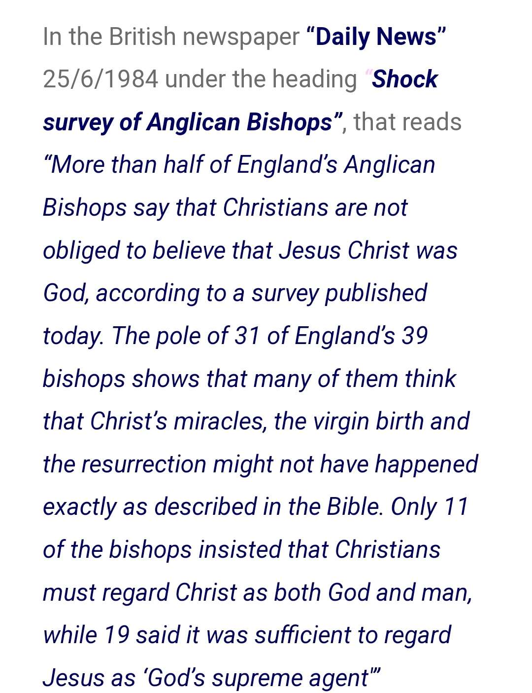

The Logical Problem of the Trinity
P1 The Father is God
P2 The Son is God
P3 The Holy Spirit is God
P4 The Father is not the Son
P5 The Father is not the Holy Spirit
P6 The Son is not the Holy Spirit
P7 There is exactly one God
These 7 premises form an inconsistent set. In other words, they cannot all be true. However, Christian Trinitarianism affirms all 7 premises. What exactly is the problem? The basic problem is tritheism. If F, S, and HS are God, and not each other, it follows that there are 3 gods.
——
This then calls into question how the statements are to be analyzed. The key debate is over the phrase "is God" in premises 1 to 3. If "is God" is taken to be an is of identity, then by classical identity F, S, and HS would be identical to each other, which would entail modalism.
Modalism is a heresy. That's something Christians will want to avoid. Maybe it's an is of relative identity? This would mean that 2 things F and S could be identical to God and yet not identical to each other This violates classical identity and most people are reluctant to do so.
What about analyzing "is God" in terms of predication? Well, if each person is ascribed the quality of divinity and they are not each other, then we are back to 3 gods. No matter how similar they are in terms of their attributes, will, actions, etc. There may be another option.
Maybe each person "is God" in the sense that they are "parts" of God. This is William Lane Craig's solution in an attempt to avoid tritheism. However, this is clearly unorthodox as none of the persons is said to possess the divine nature.
What if all 7 premises are true and we accept that true contradictions exist? This has recently been proposed by JC Beall, but involves denying the law of noncontradiction, which most people will be reluctant to do. As most people will not be likely to reject the LNC or identity.
Maybe the 7 premises are all true and they are only apparently contradictory, but not actually contradictory. Even if we cannot tell you how or why they aren't contradictory. This is a form of mysterianism, which has been proposed by James Anderson. This isn't technically a "solution" to the LPT. Rather, it is questioning whether or not a solution is required from an epistemological standpoint. Are mysteries acceptable in theology and if so when? How do we determine when something is actually contradictory vs. merely apparently? Questions to consider.
So, given the brief explanation of the LPT and possible responses, we are left with modalism or denying classical identity with respect to this problem (is of identity option). Tritheism or partialism when it comes to the is of predication option. Denying the LNC or affirming a form of mysterianism and arguing that the LPT may be unsolvable, but Christians are still justified in affirming the doctrine of the Trinity.
https://m.youtube.com/watch?v=oZElrA_aOK8&pp=ygUZYmxvZ2dpbmcgdGhlb2xvZ3kgdHJpbml0eQ%3D%3D
Christians, before making any analogy to explain the Trinity make sure it doesn’t fall under a heresy
üëá
Invalid identity statement
The trinity vs unitarianism debate is something which has been debated for centuries, and most christians hold to the model of God in which he is triune. I shall show how the existence of such a being is impossible, and that the only conclusion is that a unitarian God is true.
The trinity is a christian doctrine which states that there are three persons who are distinguished via opposition of relation, as the father has the constitutive property of paternity whilst the son has the constitutive property of filiation, hence we can distinguish these persons in reality via opposition of relation as this relation can be said to be a real distinction. Now, under thomism the persons of the trinity are each identical to the essence insofar as they are not really distinguished from it, meaning a property is not lacking between essence and persons as we define a distinction via lack of a property between two things. If this identity statement between the essence is absolute, then we can utilize the metaphysical account of LL which states: ∀X ∀Y ∀F(Fx <—> Fy) —> x=y, meaning if they share all properties, then they are just identical. Applying this metaphysical account of identity to this identity statement asserted by the thomists, we can conclude that by virtue of the persons being identical to the essence, then the essence must have these intrinsic properties which they have. Meaning by virtue of being identical the father the essence has the property of paternity, and by virtue of being identical to the son the essence has the property of filiation, thus the conclusion is that the essence has both paternity and filiation, but the son lacks paternity whilst the father lacks filiation hence the identity statement between the persons and essence is invalid as a property lacked.
Not all thomists or those who posit an identity statement are speaking of an absolute statement, rather they posit a relative identity statement which uses sortals to display an identity relation. Relative identity avoids the formulation of the argument I have placed since they deny a metaphysical account of identity. However, it would appear that an appeal to RI would be trivial since the theory of RI does not negate that we can still make real distinction by usage of non-sortal predicates/attributes, so I can simply assert that the essence lacks paternity, thus a distinction in reality between essence and father and the same can be said with the other persons (essence lacks filiation, hence a distinction in reality between son and essence).
Disregarding this entire argument I have put forth, there is still an issue with making an appeal to RI under a synchronic case. The issue is that the thesis of RI does not give a metaphysical account of identity, it simply states that things are identical if they are one and the same which does not give a reason/metaphysical account as to why they are identical. So, the conclusion is that an appeal to RI under a synchronic context is incoherent as it posits a brute fact by virtue of there being no reason for this identity statement. The only way an RI theorist can avoid this issue is by applying RI to only diachronic contexts, whilst disregarding it under synchronic contexts. Meaning; young aristotle =Φ adult aristotle, where “Φ” is a sortal “human” thus it can be rewritten like this: young aristotle =(human) adult aristotle. The explanation for this relative identity statement would be time as it is under a diachronic context. The conclusion is now that RI cannot be used under synchronic contexts, unless the PSR is dismissed.
Let us hypothetically say that the trinitarian upholds the minority model of the trinity, in which a real distinction is asserted between the persons and essence. Well, the argument I have put forth above would not apply, but a more enhanced version of Ibn Sina's individuation argument would when speaking of the persons. Now, since that the persons are inseparable and under one existence, then Ibn Sina's argument cannot apply here as there is no multiplicity of Gods with their own existence. Rather, a more enhanced version of this argument which can be applied to the trinity is that the properties of the persons IE that distinguishes them, are identical to their necessary existence. If we assert the contrary (that there's a real distinction in their necessary existence) then polytheism follows, as we have a multiplicity of necessary existences (both essentially and modally).​ So, since these properties are identical in their necessary existence but distinguished from each other, then that which distinguishes them would have to be either possible or impossible. It obviously cannot be the latter for self-explanatory reasons, and we cannot ascribe necessity since they are identical in their existence, thus the only conclusion is to assert that its possibility, hence contingency is present. If they ask why necessity cannot be said of these attributes, then that would assume a distinction in their necessary existence hence polytheism.
∀X ∀Y ∀F(Fx <--> Fy) --> x=y (Leibniz's Law of Identity)
F=T and S=T and H=T (Thomistic assumption that each Person is identical to the divine essence)
F possesses P and not Q, S possesses Q and not P (Father has the property of Paternity, and Son has the property of Filiation, etc.)
By (P1) and (P2), T must possess both P and Q (If F=T and S=T, then T must have all properties that F and S have)
By (P3) and (P4), F and S must possess P and Q as well (If T has P and Q, then F and S should also have P and Q)
F and S do not possess both P and Q (from P3), contradicting P5.
Conclusion 1 (C1): F != T and S != T (Father and Son are not identical to the divine essence, contradicting Thomistic assumption)
If F != T and S != T, then they are distinct necessary existences within the divine (from P3 and the understanding that both are inseparable aspects of the Divine).
If there are multiple distinct necessary existences within the divine, then polytheism follows meaning the trinity is polytheism
Why the persons of the Trinity cannot exist
Christians claim that the single God exists as three distinct persons: the Father, the Son, and the Holy Spirit. This belief is false because several absurdities follow from it. In this post, I will demonstrate one such absurdity:
—-
Premise 1: If the persons of the Trinity exist, then they would be either qualities, or beings.
Premise 2: The persons of the Trinity are neither qualities nor beings.
Conclusion: Therefore, the persons of the Trinity do not exist.
As regards to Premise 1 the reason it’s true is because existent essences either:
Exist while subsisting within some other essence.
Exist while not subsisting within some other essence.
The first option is the negation of the second, so they cannot be both false. And the first case describes a quality, whereas the second case describes a being. As such, it is impossible for that which exists, to be neither a quality nor a being.
Given the above, and since the Christian claims that the persons of the Trinity exist, this means that the persons of the Trinity would have to be either qualities or beings.
With regards to Premise 2, if the Christian claims: “the persons of the Trinity are qualities of God, that subsist within His being.”
We respond: “in that case, there would be no reason to limit them to three persons. If the Christian were consistent, he would have treated other qualities (such as Power, Will, and Knowledge) as divine ‘persons’ as well.”
Moreover, it is impossible for the qualities of God to separate from Him. Yet the Christian believes that the Son and the Spirit entered the world. So how can he then claim that those persons are qualities?
And if the Christian claims: “the persons of the Trinity are each a divine being, such that each is attributed with all the divine qualities.”
We respond: “this is blatant polytheism. In that case, you would be no different than the polytheist who believes in a single family of gods, comprised of a multiplicity of individual deities.”
Since the two premises are true, the conclusion necessarily follows. Therefore, the persons of the Trinity do not exist.
Independence vs Dependence Contradiction in the Trinity
Credit to Keys of the Unseen
Can one of the three persons create something against the will of the other two, or not?
If one of the persons can create something against the will of the other two, then those other two persons are not God. For their inability to actualize their will is proof that they are weaker than the one who can, and that which is weak cannot be God.
If the three persons are unable to disagree with each other, then none of them is God. In this case, each depends on the approval of the rest when creating anything, and what depends on others cannot be god.
Either way, there cannot exist more than one divine person, so the Trinity is false.
——
Another Contradiction in the Trinity
If the Father, Son, and Holy Spirit are 100% God, then that means they should all have 100% of the attributes of God. So question for the Christians:
Is Jesus independent of God the Father or dependent on God the Father?
If Jesus is independent of God the Father, then that’s 2 ultimate independent existences meaning 2 gods.
If Jesus is dependent on God the Father, then Jesus cannot be 100% God since one of God’s attributes is that he’s 100% independent and doesn’t depend on anything.
The Contingency Argument Refutes Christianity
Christianity says that God is triune. But why would the necessary being necessarily have to be triune? You can deduce many attributes of the necessary being but you will never come to conclusion that it must be triune!
Plus why specifically 3 persons? Why can’t the necessary being be 2 persons or 4 persons or an infinite amount of persons?
Once you put a number on God then he ultimately becomes contingent because he could be otherwise.
If Jesus is necessary and the Father is necessary and the Holy Spirit is necessary and they are all different how can you have 3 necessary things that are different. This would render all 3 persons contingent.
A truth is either necessarily true or contingently true. (LEM)
If a truth cannot be shown to entail a contradiction when denied, it cannot be justified as necessarily true and is thus justified as contingently true. (Definitional)
If something is justified as contingently true, then it is impossibly essentially ascribed to a necessary truth. (LI)
The trinity cannot be shown to be true by otherwise contradiction resulting.
The trinity thus cannot be justified as necessarily true and is thus justified as contingently true. (MP 2,4)
C: So the trinity is therefore impossibly essentially ascribed to a necessary truth. (MP 3,5)
1) God's attributes, including transcendence, are necessary. Thus God's attributes are true in all possible worlds. Thus ,in all possible worlds (□), if God exists (G), then God's transcendence (T) is true. (□(G → T))
2) If God were to manifest within the created realm, this would mean that there are some possible worlds where God's transcendence is not true, as in these worlds, God would be not transcendent from His creation, thus □(G → T) and ◇(¬T) cannot both be true by the LNC. Hence God entering creation would violate the necessity of God's transcendence in all possible worlds.
3) Therefore chrsitanity and all religions who posit that God entered creation are incoherent.
Are the hypostatic properties necessary or contingent?
Necessary:
P1. Necessary means it cannot be otherwise in relation to a subject (definitional)
P2. Hypostatic properties are necessary (P1)
P3. Hypostatic properties are shared between persons (P1, P2)
P4. No distinctions between persons
C. Trinitarianism is false.
Contingent:
P1. hypostatic properties are contingent
P2. Persons are contingent
C. Trinitarianism is false.
Let P represent a necessary property of God.
□ will represent necessity, meaning a property is true in all possible worlds.
Let Gx represent God in state or person x..
Px will represent the property P as it applies to Gx.
P1: □P - P is a necessary property (true in all possible worlds).
P2: G1, G2, ..., Gn - Different states or persons of God.
P3: P1, P2, ..., Pn - Property P as it applies to each state or person of God.
P4:for any x, if Gx, then □Px.( If P is a necessary property, then for any state or person of God, P should hold.)
P5: Suppose God exists in more than one state or person. Then we have G1, G2, ..., Gn.
P5: From (1), we should have □P1, □P2, ..., □Pn.
P6: However, if P1, P2, ..., Pn are not identical, i.e., if P1 ≠ P2 or P1 ≠ P3, ..., or Pn-1 ≠ Pn, it implies that P is not the same across all states or persons of God.
P7: This would mean that P is not a necessary property, as its truth varies across different states or persons of God, contradicting our initial premise that □P.
P8: Therefore, for P to remain a necessary property, P1 = P2 = ... = Pn must hold. P9: Hence, there can be no variation in the property P across different states or persons of God.
P10: If there is no variation in P across different states or persons of God, then the concept of multiple states or persons with distinct properties is not compatible with P being a necessary property.
Hence, if The Father possess the necessary property □ of paternity, then there should be 3 numerically identical fathers because necessary entails it couldn't have been otherwise
Refuting the argument of “Logic Doesn’t Apply to God”